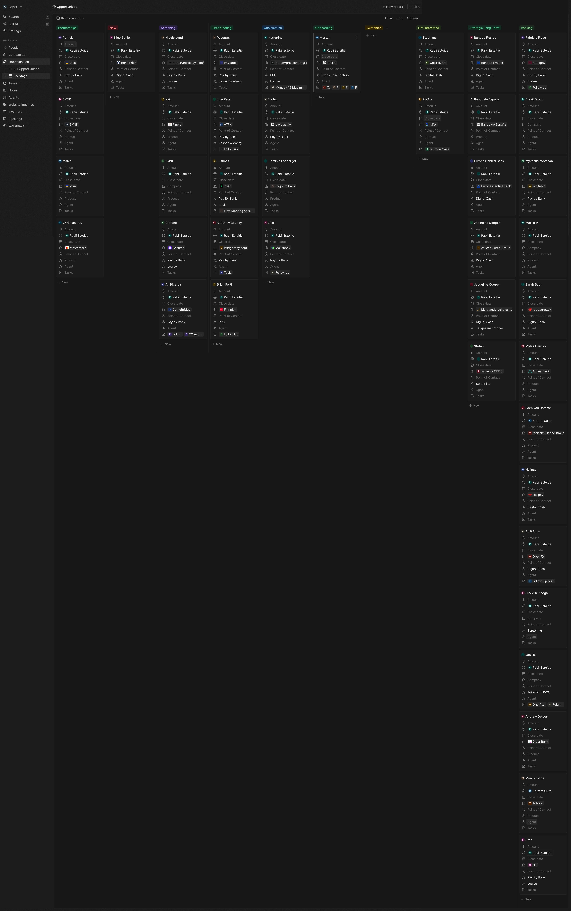

Monthly commercial report
May commercial report
May built the book; June converts it.
May was the month the department started its own book. The base taken over in April proved thin, so May rebuilt the pipeline from fresh sources — four events (SBC follow-up, Stablecon, NBC Stockholm, NEXT Malta), agent introductions and direct outreach. The CRM was restructured on the way, and May closed at 56 opportunities, 33 active — up from 20 — with more than 40 new named relationships made across the four events.
The two tracks should be read separately. The volume growth is Pay by Bank — leads from all four events, platform routes, and 20 prioritised operator connections. Stablecoin Factory advanced on depth: the Stellar demo was held 21 May and KoinKoin reopened. Digital Cash stayed early. Above the products sit the month's two biggest outcomes — BVNK offered their rails, Visa offered to help close the payout gap — and the start of a Pay by Bank introducer network: Louise on new terms, Lisa Akter in onboarding, Paz van Gelder from Stablecon, first asks to two new Malta contacts.
Decision needed: back a June built on conversion — close the Visa and BVNK loops, convert the booked Pay by Bank calls, move Stellar from demo to scope, and work the June list: 100 contacts selected from the consolidated event attendee lists.
The deal book has volume now.
From the restructured CRM board as of 31 May 2026, plus the consolidated event attendee lists. Change from April (baseline: 31 opportunities). Definitions: Metric Definitions.
April → May: a clean, growing pipeline.
The pipeline runs as a living list, reviewed weekly and kept clean. Here is how a thin, inherited book became May's: pushed, cleaned and rebuilt.
April leads pushed forward
The serious April leads moved: Visa/Tink to a booked call, PressEnter to a second call with their incoming Head of Payments, Stellar to a held demo, Paystrax into a locked intro. At close, nine deals carried a dated next step.
Honest about what stalled
Low-quality and out-of-region items were cleared rather than carried as false hope: Apcopay to backlog, Casumo cold, GLI out of region, Caroline dropped. The board shows only deals genuinely moving.
New pipeline in volume
The NEXT tier-2 operators were promoted into New (13), and the events seeded fresh deals (Finera, Bybit, BridgerPay, the SBC merchant set). Pipeline grew from 31 to 56.
Net effect: the active working pipeline nearly doubled (20 → 33) while the book got cleaner. Every lead was advanced, parked or disqualified, on a weekly review rhythm. That discipline makes the numbers mean something.
Advancing · Pay by Bank meeting held or movement at close
Advancing · Stablecoin Factory demo held or thread reopened
Where the pipeline came from.
The month ran on events: the SBC follow-up from late April, then Stablecon Amsterdam, NBC Stockholm and NEXT Malta back-to-back in the second half of May.
BVNK and Visa
BVNK offered to make their rails available to Aryze. Visa indicated it can help close the Pay by Bank payout gap. Both next steps sat with us at close. They were the month's two most important results.
Nordplay (COO)
A face-to-face meeting opened a warm executive relationship at an active Malta operator, plus 20 operator connections to work.
Line Peteri
A key relationship into the gaming, affiliate and partnership landscape, and already the route into ATFX. Nurture as a top-priority strategic contact, not a single lead.
At close, the attendee lists from all four events were secured and consolidated into one sorted list — and 100 contacts were selected as June's outreach wave.
The biggest wins were partnership-shaped.
Two relationships that change what Aryze can offer — and a network starting to form around the products.
Rails offered
BVNK offered to make their rails available to Aryze — expanding what we can offer customers. The follow-up sat with Aryze at close.
Payout gap
Visa indicated it can help close the Pay by Bank payout gap — removing a standing objection. A partnership presentation sat with Aryze at close.
From relationships to structure
Louise moved onto updated terms (27 May), Lisa Akter entered introducer onboarding (27 May), Paz van Gelder engaged on an arrangement at Stablecon, and first asks went out to two new Malta contacts (31 May).
What changed.
Three observations that should shape June.
The deal book has volume now.
56 opportunities, 33 active after the restructure, 9 advancing with a dated next step. The constraint is converting the active book into booked calls, not finding leads.
Biggest wins were partnership-shaped.
BVNK (rails) and Visa (payout gap) change what Aryze can offer. Closing the payout gap would remove a standing Pay by Bank objection.
Partner-play is recurring.
Paystrax, BridgerPay, Finera and Finnplay are orchestration/PSP partner motions: one integration can open several downstream operators. A defined partner-play track would speed qualification.
Where to focus next.
June actions as committed at month close — owner and date on every item.
Win the live conversations.
Visa/Tink (30 May), Paystrax (2 June) and the PressEnter second call were the nearest dated steps at close. Convert each to a defined next stage.
Land Visa and BVNK.
Deliver the Visa partnership presentation and close the BVNK rails loop: the two most important follow-ups from May.
Work the June 100.
Lock Nordplay, and run first-touch across the June list — 100 contacts from the consolidated attendee lists — with the 20 prioritised operators in front.
June is built around closing the booked calls and the partnership loops, and working the June 100 — the 20 prioritised operators first.
Jodi on partnerships (Visa, BVNK); Rabii on operators (Nordplay, the 20, booked calls, SBC leads).
A defined next stage on each advancing deal, the two partnerships closed, and first-touch across the June 100 — the 20 prioritised operators first.
Appendix — full analysis.
Everything behind the report: full pipeline, the new-stage operators, sources and definitions.
Open full analysis
Early / nurture event-sourced, awaiting movement
| Account | Product · stage | What moved |
|---|---|---|
| 7bet (Justinas Šliažas) | Pay by Bank · Screening (UK) | NEXT catch-up; wedge is Trustly UK cost above GBP 0.50 per transaction. |
| Bybit (Jan) | Pay by Bank · Screening | Met at NBC; UK + EU fiat on-ramp angle. |
| BridgerPay (Matthew Boundy) | Pay by Bank · First Meeting | SBC-sourced; add Aryze as a rail in their orchestration catalogue. |
| WhiteBIT (Mykhailo Movchan) | Pay by Bank · Backlog → re-engage | Restarted after the prior owner left; early EU scoping. |
| Finnplay · GameBridge · MaksuPay | Pay by Bank · Screening / First Meeting | Qualified at SBC; follow-ups out. |
| UK casino (via M. Klee) | Pay by Bank · New | Intro to a co-owner of a top-3 UK online casino; awaiting the forward. |
| Inno · OneTok (Angelo Inno · Stéphane Favre) | Digital Cash · early | Discovery requested; several follow-ups unanswered. |
Backlog / out of region
| Account | Stage | Why | Revisit |
|---|---|---|---|
| Apcopay (Fabrizio Ficco) | Pay by Bank · Backlog | Not a priority for them now (intel via Stef Lavarone at NEXT). | July–August 2026 |
| Casumo (Stefano Grech) | Pay by Bank · Backlog | No substantive reply; parallel route held. | If no reply, park |
| GLI (Brad Lipner) | Pay by Bank · Out of region | Curacao-licensed, no UK/EU footprint. | On UK/EU expansion |
New-stage operators (NEXT tier-2, promoted into pipeline)
Betsson, Tipico, Gaming1, ComeOn, SkillOnNet, LeoVegas, Entain, NetBet, FDJ United, Soft2Bet — and three further tier-2 operators (13 total in New).
CRM snapshot

Sources: CRM opportunities board (as of 31 May 2026); CRM notes; SBC / Stablecon / NEXT Malta event reports; weekly updates. Definitions: Metric Definitions. Restatements: none (first report on the restructured board; April shown as baseline only).